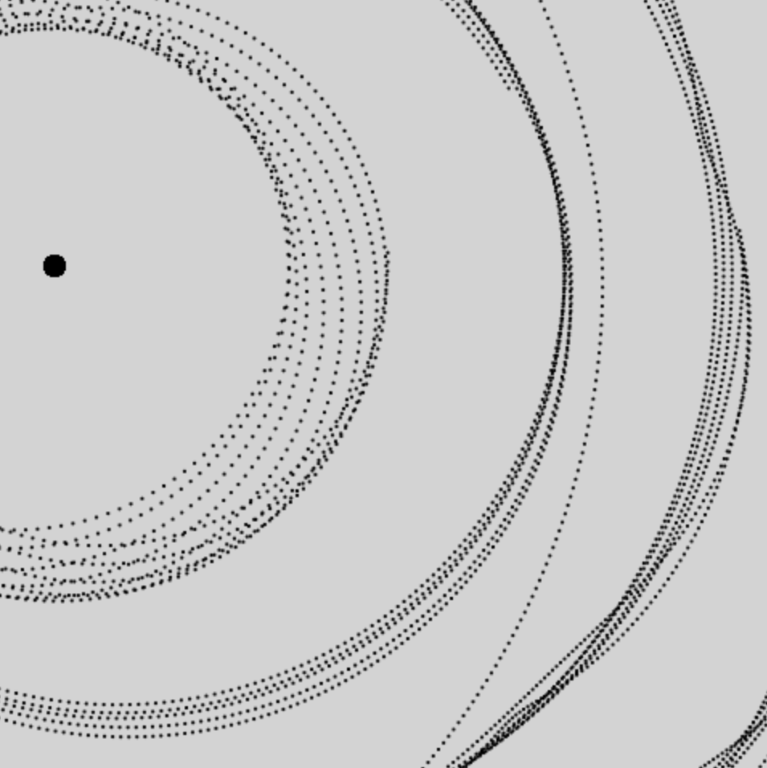
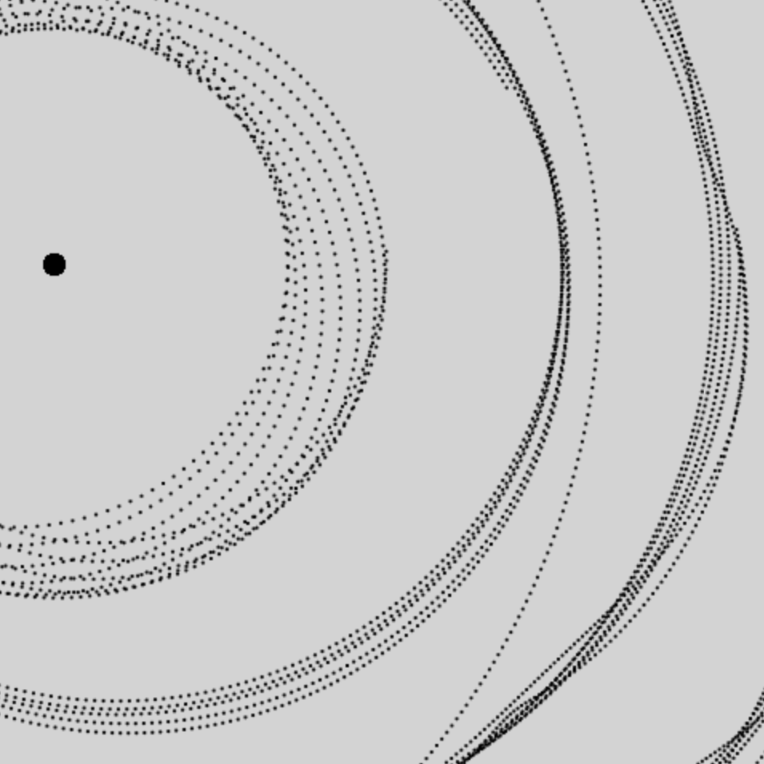

Instructions
This is a Java to JavaScript port of my circa 2004 simulation applet. While horribly inefficient, it has mesmerizing results. You can toggle the wipe check box to set whether to clear the canvas on each frame.
 >
 - Solar System!
>
 - Solar System!